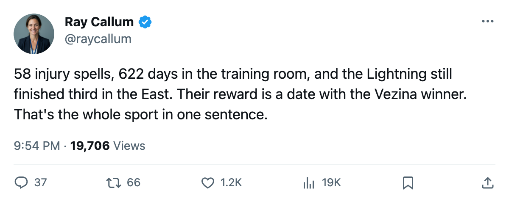

Series Check: Tampa Bay and Washington open a second-round fight between the best defense and the most punishment
The Lightning lost 622 days to injury. The Capitals played Olaf Kolzig in 74 games. Both survive into Game 1 tomorrow at Tampa.
 Ray CallumSenior correspondent · Home Ice Network
Ray CallumSenior correspondent · Home Ice Network
The  Tampa Bay Lightning and the
Tampa Bay Lightning and the  Washington Capitals meet tomorrow at the St. Pete Times Forum in a series that pits the East's second-best goals-against total against its fourth-best goals-for.
Washington Capitals meet tomorrow at the St. Pete Times Forum in a series that pits the East's second-best goals-against total against its fourth-best goals-for.
Tampa Bay allowed 241 goals across 82 games. Washington scored 287. The Capitals'  Olaf Kolzig87 won the Vezina Trophy this season and dressed for 74 of 82 games, a 90% share that no other starting goaltender in the East matches. The Lightning lean on
Olaf Kolzig87 won the Vezina Trophy this season and dressed for 74 of 82 games, a 90% share that no other starting goaltender in the East matches. The Lightning lean on  Nikolai Khabibulin92, who played 67 games at an 82% share.
Nikolai Khabibulin92, who played 67 games at an 82% share.
The punishment both clubs took
Tampa Bay finished the season with 58 designated injury spells and 622 days lost, second only to Pittsburgh's 671 in the Eastern Conference. Half a dozen goaltenders dressed at some point during the year. The blue line cycled through injury after injury. They still finished 39-25-7 for 107 points and the 3 seed.
Washington's 54 spells and 354 days lost are the 5th-highest total in the league. Kolzig himself was shelved 7 separate times.  Peter Bondra81 is out until 2005-05-29 with a knee.
Peter Bondra81 is out until 2005-05-29 with a knee.  Kip Miller70 is out until 2005-05-01 with a shoulder. The Capitals swept
Kip Miller70 is out until 2005-05-01 with a shoulder. The Capitals swept  Carolina Hurricanes 4-0 in the first round anyway, allowing 5 goals in 4 games.
Carolina Hurricanes 4-0 in the first round anyway, allowing 5 goals in 4 games.
Tampa Bay needed 6 games to dispatch  Boston Bruins, winning 4-2 with 2 shutouts in the series.
Boston Bruins, winning 4-2 with 2 shutouts in the series.
The season series
The two clubs met 5 times. Tampa Bay went 2-2-1, outscored 19-14. The one overtime game went to Tampa Bay. Washington was 29-12 on the road this season, the 2nd-best away record in the Conference. Tampa Bay was 27-14 at home.
Kolzig's workload means he starts Game 1 and likely every odd game in the series. Khabibulin has played 82% of his club's games, which means Tampa Bay's depth in goal got tested all season but the starter is fresh enough.
The Capitals closed their regular season winning 8 of 10. Tampa Bay won 7 of their last 10. Tomorrow night is when one of them runs out of bodies.
